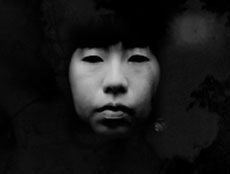

|
AIKO OKAMOTO
Seide (Tränensalz) | 2010 | 3’
Format: DV
www.flachware.de/aiko-okamoto
mo.bubunation.de
Mysteriöse Tränen geben Hall und Wiederhall in der Höhle, man weiß nicht, woher sie kommen und warum. Aber das ist nichts fremdes, sondern etwas Warmes, was man in seiner Antike schon kannte. - Aiko Okamoto
Aiko Okamoto visualisiert eine Memoire der Zukunft der Cio D'Or, das Gefühle der inneren Traurigkeit, die das Leben begleitet.
Aiko Okamoto, geboren in Kyoto, Japan. Lebt seit 2003 in München. Seit 2008 Studium an der Akademie der Bildenden Künste, München und seit 2010 an der Kunsthochschule Kassel. Ihre Schwerpunkte sind VJing, Videoinstallation, ihr Thema die Vergänglichkeit der Konsumgesellschaft. Seit 2006 läuft unter ihrem Label bubu nation eine off-space Ausstellungsreihe und dazugehörige Katalogserie. Sie ist außerdem seit 2003 tätig als VJ in Clubs und Festivals. Ihre Motive stammen aus dem Alltag und damit untersucht sie die Vergänglichkeit der Konsumgesellschaft. http://mo.bubunation.de
Ausstellungen (Auswahl):
2004 | “Double Feature” ZKMax, München | 2006 | “(we) fancy faces..” (bubu nation vol.2) Kranhalle, München | “Sklaven küsst man nicht” Neue Galerie, Landshut | “surprise!” (bubu nation vol.8), Kranhalle, Munich | “Ausstellung der neuen Sklaven” Kunstraum Süd, Frankfurt | 2007 | “Das Model” (bubu nation vol.12), Kranhalle, Munich | “tokyo-nippon” Stadtsaal, Buchloe | “Erscheinung” Shining Festival, Bernau am Chiemsee | “Sklaven küsst man nicht” Domagkatelier Haus 50, München | 2008 | “urban research” (bubu nation vol.20) Kranhalle, München | “cheap like wow!” UAMO Festival, Kunstarkaden, München | “Mytische Stadt” Altstadtringfest, Maximiliansplatz, München | “Tür Auf” (bubu nation vol. 25) Kranhalle, München | “kleinere Arbeiten” Raum 500, München | 2009 | “das wärs gewesen” Akademiegalerie, München | “Gleichgewichtsstörung / Disequilibrium” lothringer 13 / spiegel, München, Eyebeam Art+Technology Center, New York | “Dérapage 09″ École de design de l’UQÀM, Montréal | “some kind of vacuum” Galerie Royal, München | “Kino on demand” Auditorium, Akademie der Bildenden Künste, München | “Kulturtage Weicht” HofHaus, Weicht | “Self-Made Cavalcade” art´s complex, Edinburgh | “Soup” HeadEgg, München
zurück
|